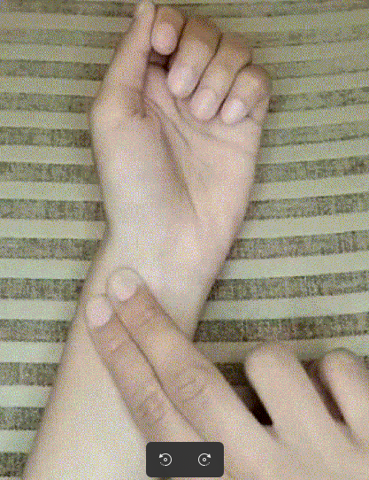
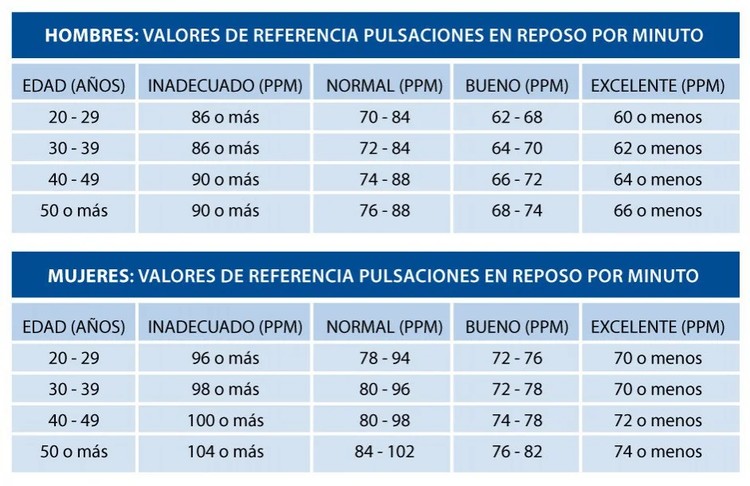

Alma de Atleta

Para tomar la frecuencia cardíaca, te recomiendo usar los dedos índice y medio en la muñeca opuesta. Presiona suavemente hasta sentir el pulso y cuenta las pulsaciones durante un minuto completo para obtener el valor más exacto. Abajo está un cronómetro lo puede utilizar para medir la frecuencia cardíaca. Esta formula funciona mejor que algunas aplicaciones, porque la medida es más exacta.

00:00:00.000
12-Minute Running Coach
01:00
Widget is loading comments...